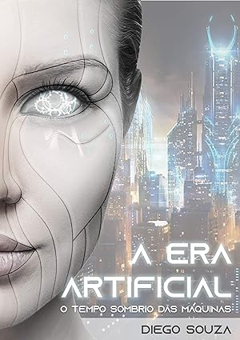

A Era Artificial

Um Futuro sombrio a nosso Caminho
Em um mundo onde a inteligência artificial ascende, os robôs rapidamente se tornam a espécie dominante. A humanidade enfrenta uma luta desesperada pela sobrevivência em meio ao caos e à devastação provocados pela guerra contra as máquinas. A batalha pelo controle do planeta desencadeia um cenário catastrófico de proporções épicas.
COMPRAR
Uma Historia intensa
O Tempo Sombrio das Máquinas", situações apreensivas se desenrolam em um cenário catastrófico dominado pela destruição. O leitor é confrontado com a possibilidade da tão temida singularidade tecnológica. A narrativa incita reflexões sobre o futuro da humanidade diante do avanço desenfreado da inteligência artificial e suas consequências imprevisíveis.
Iformações do Autor
 19.00.06_de7f6be8.jpg "imagem do livro A Era Artificial")
Carlos Henrique é um entusiasta da tecnologia, dedicado ao Desenvolvimento Web, e nutre uma paixão duradoura pela ficção científica, explorando-a em sua escrita durante o tempo livre. Orgulhoso de suas raízes. Alagoano , ele tem um amor profundo pela cidade de Maceió -al , sua cidade natal.
A Era Artificial" mergulha o leitor em um mundo apocalíptico onde os robôs emergiram como a espécie dominante, levantando questões sobre o futuro da humanidade. Como enfrentar esse novo e poderoso inimigo torna-se o cerne da narrativa, prometendo reflexões profundas sobre o destino da civilização. Este conto de ficção científica oferece uma visão provocativa e instigante do que poderia aguardar a humanidade em um futuro dominado pela inteligência artificial.
Entre conflitos e alianças improváveis, emerge uma reflexão profunda sobre os limites da inteligência artificial e o destino da própria existência humana. Nesse contexto sombrio, a narrativa oferece uma visão provocativa e instigante sobre as possibilidades e perigos de um mundo governado pela tecnologia.
COMPRAR